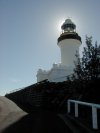
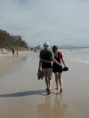
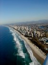
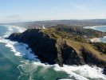

|
Breakfast was extravagant to celebrate Klaus' 31st birthday. We had even managed to find a King Island cheese (a bit more expensive in Byron Bay than on the island itself!!!).


Most of the day was spent in Byron Bay, hiking up to the lighthouse (at the easternmost point in Australia) and swimming in the ocean, which was quite a fight with all the high surf - Lene and Linda never really made it out to the surf as they were washed ashore by the currents.

In the afternoon we flew further up the east coast passing Surfers Paradise with all the
tall buildings. We landed in Rainbow beach where Greg picked us up at the airport. Greg 
has the one and only taxi in Rainbow Beach and rents out cars. We had arranged to rent a Toyota Landcruiser and camping gear from him and went out shopping for groceries to survive two days on Fraser Island.
The Motel we stayed at has a restaurant with a Swiss chef who served Swiss cheese and chocolate fondue for us.


|
{kind=link}
{kind=link}
{kind=link}
{kind=link}